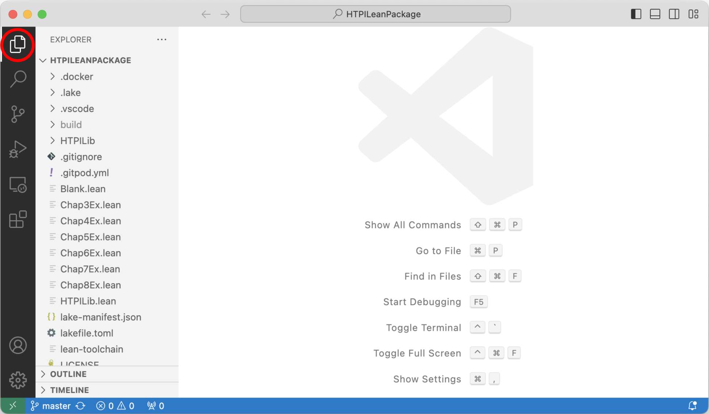

How To Prove It With Lean
Daniel J. Velleman ![]()
序言
关于本书
这本书是为了配合我所著的 How To Prove It: A Structured Approach, 3rd edition（以下简称 HTPI）而编写的，HTPI 由剑桥大学出版社出版。尽管本书是自成一体的，但我们有时会引用 HTPI 中的段落，因此，如果你手边有一本 HTPI，理解本书将会更加容易。
HTPI 讲述了一种构建数学证明的系统性方法。本书的目的是向你展示如何使用一个名为 Lean 的计算机软件包，以帮助你掌握 HTPI 中介绍的技术。Lean 是一款在 Windows、MacOS 和 Unix 系统的计算机上都可免费使用的软件 。为了充分使用本书的内容，你需要在你的计算机上下载并安装 Lean。我们将在下文中介绍如何进行安装。另一种选择是通过 Gitpod 在线运行 Lean，我们也将在下文中解释如何操作。
本书的章节和小节编号与 HTPI 中的相应部分相匹配。HTPI 的前两章涵盖了理解后续章节证明技巧所需的基础逻辑和集合论的初步内容。我们假设你已经熟悉这些内容（如果还不熟悉，去阅读 HTPI 的相关章节吧！），因此本书的第 1 章和第 2 章只会简要总结最重要的要点。这两章之后，我们会介绍 Lean 的基础知识，并展示如何使用 Lean 来编写证明。我们将从第 3 章开始正式介绍 HTPI 中的证明技巧，也将在那里开始讨论如何使用 Lean 来帮助掌握这些技巧。
如果你是在线阅读本书，在左侧边缘的标题末尾，你会找到一个图标，点击该图标可以获取本书的 PDF 版本。图标下方是一个搜索框，你可以使用它在书中搜索任何单词或短语。再往下是本书各章节的列表，点击任何章节即可跳转到对应章节。在每个章节中，右侧边缘的目录列出了该章节中的各个部分，同样，你可以通过点击跳转到任何部分。每章末尾还有链接，方便你跳转到上一章或下一章。
关于 Lean
Lean 是一种被称为 证明助手 的软件包，它可以帮助你编写数学证明。我们将在本书中看到，Lean 可以在多个方面提供帮助。首先，如果你将证明输入 Lean，Lean 会检查证明的正确性并指出错误。在你输入证明的过程中，Lean 会跟踪当前已完成的部分和尚未完成的部分，并将这些信息显示给你。这有助于你在推导证明时保持正确的方向。有时，Lean 还可以为你补充证明中的一些小细节。
当然，要实现这一点，你必须以 Lean 能够理解的格式输入你的证明。本书的大部分内容将用于解释如何编写 Lean 能理解的证明。
Lean 的安装
这些安装指引基于此处描述的安装步骤。其他安装方法可以在这里找到。
我们将使用 Visual Studio Code 来运行 Lean，因此你需要先安装 VS Code。VS Code 可以从这里免费下载。
您还需要从https://github.com/djvelleman/HTPILeanPackage下载与本书配套的 Lean 软件包。点击链接后，点击绿色的“Code”按钮，在弹出的菜单中选择“Download ZIP”。下载完成后，解压该 ZIP 文件，创建一个包含 HTPI Lean 软件包的文件夹。您可以将此文件夹放置在计算机上的任意位置。
现在打开 VS Code，你应该会看到一个类似这样的窗口：
点击窗口左侧的 扩展 图标（上图中红色圈出处），这将打开一个可用扩展程序列表：
在 Search Extensions in Marketplace 处，输入“lean4”，VS Code 应该会找到 Lean 4 扩展并将其显示出来：
点击 Install 安装 Lean 4 扩展。
接下来，在 VS Code 中，从文件菜单中选择“Open Folder …”，然后打开之前下载的 HTPI Lean 软件包所在的文件夹。在窗口左侧的“Explorer”下，你应该能看到该软件包中的文件列表。（如果没有看到列表，尝试点击 Explorer 图标，下图中用红色圈出。）

点击文件列表中的“Blank.lean”文件，你应该会看到一个警告，提示 VS Code 启动“lean”语言服务器失败：
点击“Install Lean using Elan”按钮，Lean 即刻被安装。然后，Lean 将 构建 HTPI Lean 软件包。这可能需要一些时间，但好在构建只需执行一次。
如果出现任何问题，请尝试退出 VS Code 并重新启动。最终，你的窗口应该如下所示：
如果你在窗口右侧没有看到 Infoview 面板，请点击上图中红色圈出的“\(\forall\)”图标，然后从弹出菜单中选择“Infoview: Toggle Infoview”。
现在安装就完成了。
使用 Gitpod
要在 Gitpod 中打开与本书配套的 Lean 软件包，请点击这里。
如果你还没有 Gitpod 账号，系统将会提示你创建一个；免费账号每月有 50 小时的使用时间。然后，你会被要求创建一个“workspace”。点击“Continue”。创建工作区并初始化 Lean 可能需要一些时间，但这只需进行一次。在此过程中，你会看到有关“cloning”、“building”、“downloading”和“decompressing”的消息。接下来会有关于为本书章节构建文件的消息。（在此过程中会出现一些警告消息，忽略它们即可。）最后一条消息是“Building HTPILib”。当该过程完成后，你可以点击窗口下方右侧的“X”关闭包含消息的终端面板。此时你应该能看到 HTPI Lean 软件包，如前一部分所述。之后，你可以从你的Gitpod 用户页面返回到刚创建的工作区。
关于 HTPI Lean 软件包
从“Lean的介绍”开始，每一个章节都有一个对应的文件，包含该章节的所有 Lean 定义和定理。同时，某些章节还会有对应的包含习题的文件。在某一章的习题文件中，该章及之前所有章节的定义和定理都可以用于解决里面的习题。
章节文件位于“HTPILib”文件夹内，该文件夹中还有一个其他文件。这些文件都是使软件包正常工作的必需文件，请勿编辑 HTPILib 文件夹中的文件，否则你将需要重新下载软件包。
许可证
本书采用Creative Commons Attribution-ShareAlike 4.0 International License许可协议。此许可证允许你分享或改编本书。在任何改编中，你必须注明 Daniel J. Velleman 为作者，并且还必须承认摘录自 How To Prove It, 3rd edition 的内容（版权归 Daniel J. Velleman 2019，剑桥大学出版社出版）是经剑桥大学出版社许可转载的。本书中的每个摘录都用括号注释“(HTPI p. …)”来标明摘录自 How To Prove It, 3rd edition 的具体页码。有关详细信息，请参阅许可证中的内容。
致谢
有很多人为这个项目提供了建议、鼓励和反馈。在此特别感谢 Jeremy Avigad、Clayton Cafiero、François Dorais、Charles Hoskinson、Heather Macbeth、Pietro Monticone 和 Ketil Wright 的帮助。